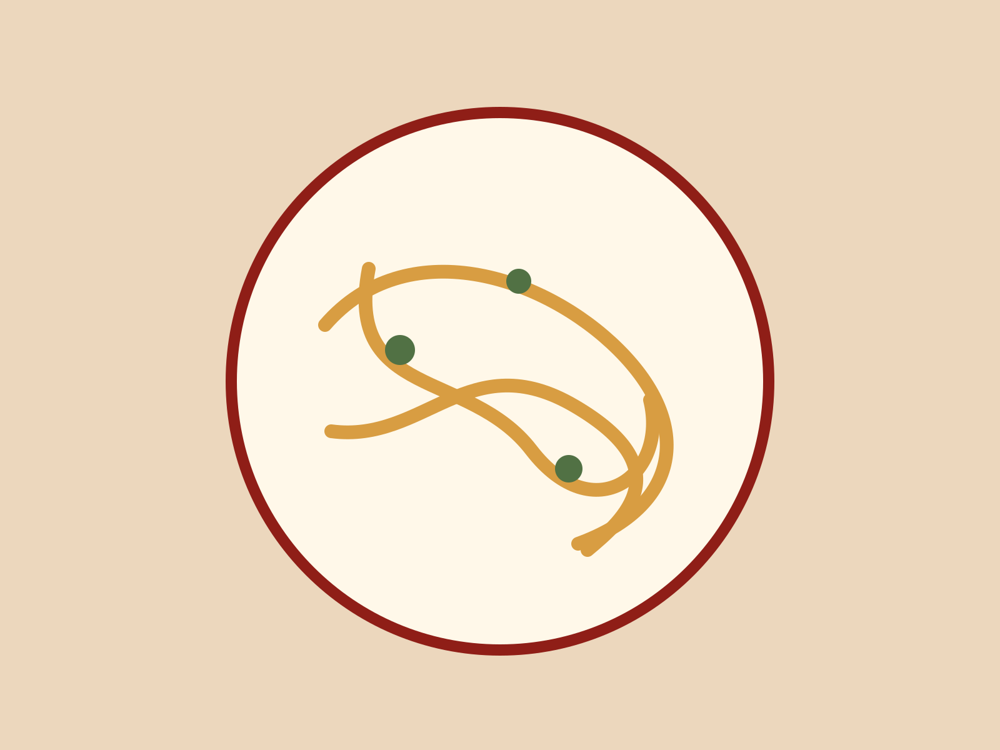

Our story
A restaurant that grew without becoming a theme.

“The first rule was that it had to feel like somewhere we would actually eat every week.”
Casa Rosso opened in 1988 with twelve tables and a menu written after the morning market. The kitchen still works from the same basic idea: buy well, make the pasta here, keep the dishes legible, and let the room do the rest.
Today the menu moves between Rome, Emilia-Romagna, and whatever local produce deserves the detour.
1988
Opened with twelve tables.
2004
Expanded into the neighboring storefront.
Still now
Family-owned, pasta made every afternoon.